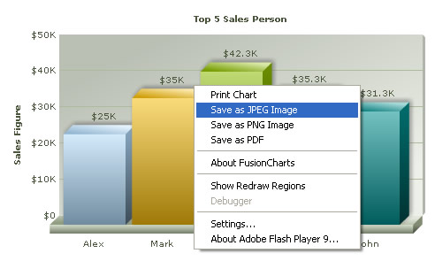
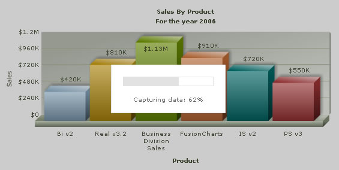

Saving as Image > Setting it up |
|||||||||||||||
To allow image saving, you just need to set: <chart ... imageSave='1' imageSaveURL='Path/FusionChartsSave.aspx or FusionChartsSave.php' ...> And now copy the image saving script from Download Package > ImageSaving folder to the relevant path. This will enable the charts to export as image, as shown below: |
|||||||||||||||
|  | |||||||||||||||
| When the user clicks on "Save as Image", he'll first be presented with this dialog box, after which the data is sent to server and returned as an image. | |||||||||||||||
|  | |||||||||||||||
| Attributes pertinent to image saving | |||||||||||||||
| You can specify the following attributes for <chart> element to configure image saving: | |||||||||||||||
|
|||||||||||||||
| Troubleshooting | |||||||||||||||
If the chart doesn't save as image properly, you need to check for the following:
|